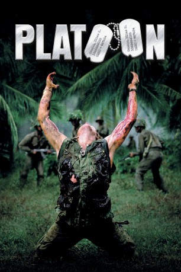
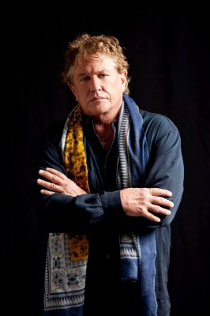
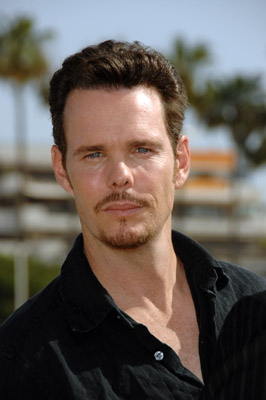
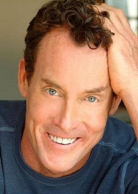
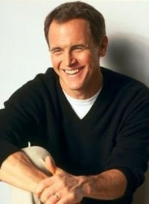
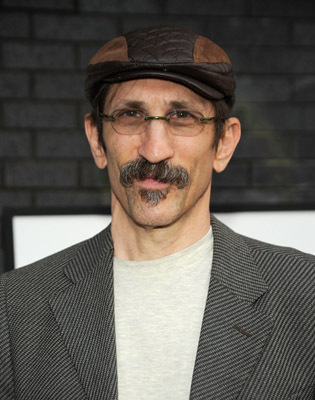
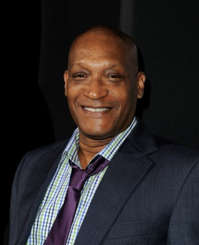
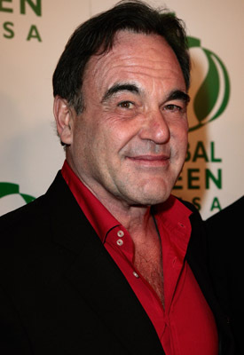

#1637 Platoon
Auszeichnungen: 4 Oscars gewonnen für 4 Oscars nominiert 3 GoldenGlobes gewonnen 2 BAFTA-Awards gewonnen
 
 IMDB-Wertung: 8.1 / 10
IMDB-Wertung: 8.1 / 10  IMDB-TOP-Platzierung: 192
IMDB-TOP-Platzierung: 192  Metascore: 92
Metascore: 92 
Vietnam, 1967. Der Student Chris Taylor meldet sich voller Idealismus als Freiwilliger im Dschungelkrieg. Doch in der grünen Hölle gelangt er schnell zu einer bitteren Erkenntnis: Der Krieg schafft keine Helden, sondern macht aus Menschen rohe Bestien. Der tägliche Kampf gegen den nahezu unsichtbaren Feind und die ständigen Verluste unter seinen Kameraden setzen ihm physisch und psychisch stark zu. Chris’ Träume zerplatzen endgültig, als er merkt, dass der Krieg auch in den eigenen Reihen tobt. Zwischen dem brutalen Sergeant Barnes und Sergeant Elias, der sich trotz der Nerven aufreibenden Kämpfe seine Menschlichkeit bewahrt hat, herrscht blanker Hass. Die Situation spitzt sich zu und Chris versucht, den Horror des Krieges zu überleben und sich an Barnes zu rächen.
Jahr: 1986
Dauer: 120 Minuten
FSK: 16
Land: England Studio: 20th Century Fox of GermanyTonspuren: DTS-HD - ,
Untertitel: Deutsch,
Auflösung: 1080p (1920x1040) Größe: 13107 MB
Genre: Drama, Krieg
Regisseur:  Oliver Stone
Oliver Stone
Drehbuch: Oliver Stone
Soundtrack: Georges Delerue
Darsteller:
-  Tom Berenger als Sgt. Barnes
 Keith David als King
Keith David als King- Willem Dafoe als Sgt. Elias
 Forest Whitaker als Big Harold
Forest Whitaker als Big Harold- Francesco Quinn als Rhah
-  Kevin Dillon als Bunny
-  John C. McGinley als Sgt. O'Neill
-  Mark Moses als Lt. Wolfe
 Johnny Depp als Lerner
Johnny Depp als Lerner Charlie Sheen als Chris
Charlie Sheen als Chris-  Richard Edson als Sal
-  Tony Todd als Warren
- Paul Sanchez als Doc
 Dale Dye als Captain Harris
Dale Dye als Captain Harris- Brad Cassini als Soldier , uncredited
-  Oliver Stone als Alpha Company Major in Bunker , uncredited
- Reggie Johnson als Junior
- Corey Glover als Francis
- Chris Pedersen als Crawford
- Bob Orwig als Gardner
- Corkey Ford als Manny
- David Neidorf als Tex
- Kevin Eshelman als Morehouse
- James Terry McIlvain als Ace
- J. Adam Glover als Sanderson
- Ivan Kane als Tony
- Peter Hicks als Parker
- Basile Achara als Flash
- Steve Barredo als Fu Sheng
- Chris Castillejo als Rodriguez
- Andrew B. Clark als Tubbs
- Bernardo Manalili als Village Chief
- Than Rogers als Village Chief's Wife
- Li Thi Van als Village Chief's Daughter
- Clarisa Ortacio als Old Woman
- Romy Sevilla als One-Legged Man
- Mathew Westfall als Terrified Soldier
- Nick Nicholson als Mechanized Soldier #1
- Warren McLean als Mechanized Soldier #2
- Li Mai Thao als Rape Victim
- Ron Barracks als Medic
- Mark Ebenhoch als Ebenhoch , uncredited
- Robert 'Rock' Galotti als Huffmeister , uncredited
- Eric Hahn als Soldier , uncredited
- Berto Spoor als Soldier , uncredited
- Henry Strzalkowski als Bit Part , uncredited
Datei: X:\1986\Platoon (1986, FSK16, 1920x1040).mkv seit 28.07.2015
Festplatte: HD 1980-1986
 Es gibt insgesamt 50 Filme in der Gruppe '1986'
Es gibt insgesamt 50 Filme in der Gruppe '1986'